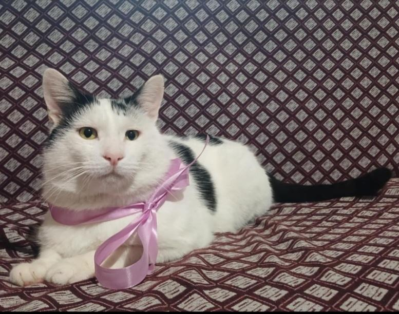

კატა
ჩემი კატა ფერნანდო. ძაან ბევრს ჭამს. ერთი პერიოდი მსუქანი იყო მარა ახლა დაიკლო.. რანაირად ეგ არ ვიცი რადგან მაინც ბევრს ჭამს.
top
ძაღლი
ჩემი ძაღლი ოტო. 14 წლის არის (მალე 15-ის ხდება), ჩემ დაზე 1 წლით უმცროსია. დაბერდა, მარა სხვა ძაღლებთან ჩხუბი მაინც
გამოსდის
(თავისი შეცდომებისგან არ სწავლობს).
top